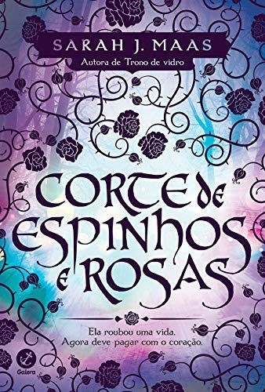
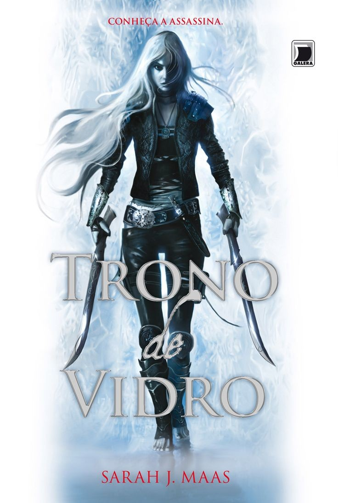
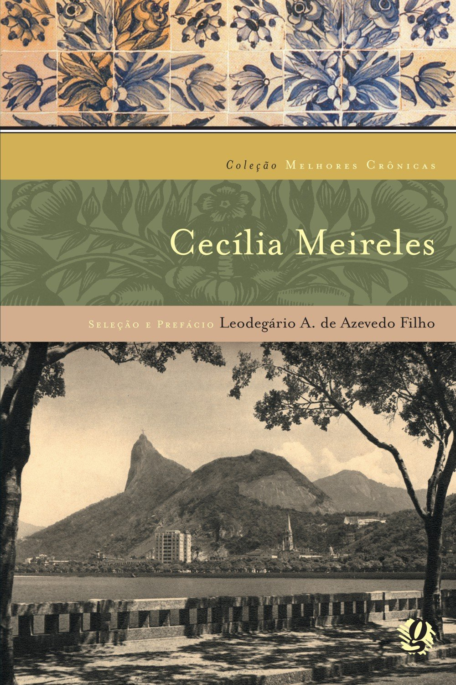
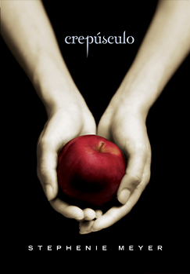
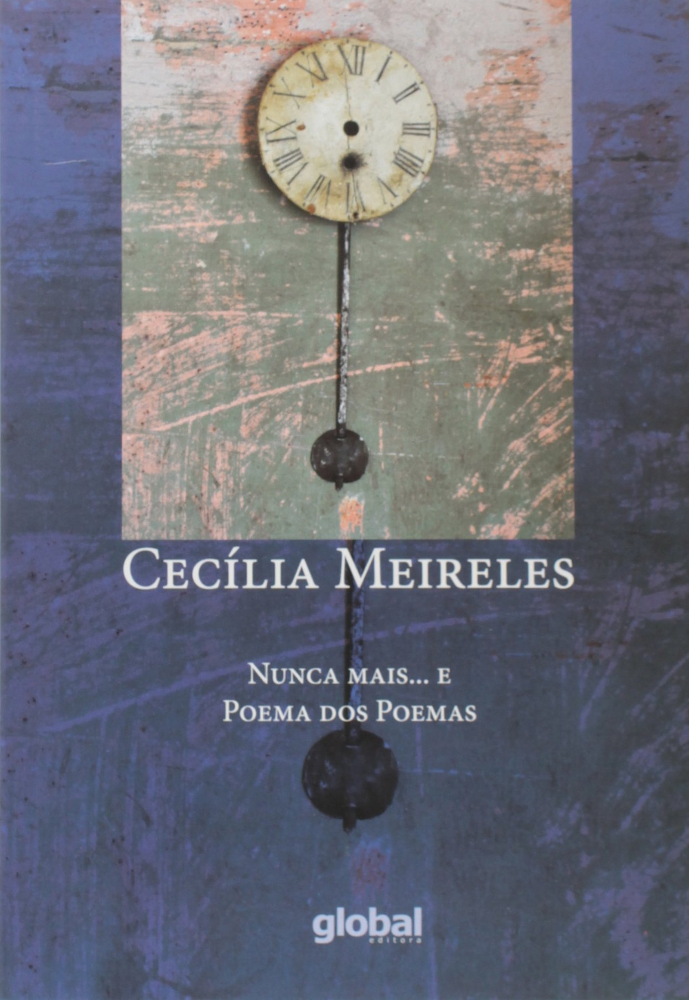

Estilhaça-me Juliette, uma garota de dezessete anos atualmente, tem um metro e sessenta, possui longos cabelos castanhos e olhos de cor verde azulado. Aos quatorze anos, essa menina foi aprisionada em um manicômio, trancada numa cela, por ser uma pessoa diferente. Ela foi tratada por especialistas, mas não conseguiram resolver seu problema. Juliette passou anos ali numa escuridão e sofrendo sozinha, com seus pensamentos, e não sabia nada do que acontecia no mundo lá fora, afinal era só através de uma janela alta e pequena que ela via a luz do dia. Até que alguma coisa mudou... Adam é um soldado experiente, tem um metro e oitenta, olhos azuis, cabelos castanhos escuros. É magro, forte e lindo. Apesar de seu posto como soldado, tem quase a mesma idade de Juliette, porém já passou e viu muitas coisas na vida. Juliette, não entende o que está acontecendo, como gostaria de ser um pássaro e passar por aquela janela, para ver com seus próprios olhos tudo lá fora. A garota ficava pensando constantemente, quem a tiraria dali, pois já sofreu muito por ser rejeitada em casa, na escola e por todos a sua volta, queria apenas paz e uma vida normal. Agora ela se sente incomodada, porque vai ter um companheiro de cela o que esperar disso? Afinal, faz muito tempo que não vê ou conversa com alguma pessoa. Juliette tem muito medo de tocar e ser tocada, porque no passado ela feriu alguém sem querer e por causa disso é que foi parar em vários lugares e terminar onde está agora. Juliette tem dificuldades muitas vezes de separar o real do imaginário, por ter ficado tanto tempo sozinha. A jovem nem reconhece mais sua voz, não se olha no espelho a muitos anos e se menospreza por ser diferente. Ela conta dias horas e minutos e sabe exatamente a quanto tempo está nesse lugar. Entretanto, ela acha que não merece viver, e isso lhe dói tanto que chega a pedir para a matarem, até que chega de Adam no seu cativeiro. Ao longo da leitura vejo uma Juliette, tentando sobreviver ao caos, mesmo achando que não merece.A destruição está por todo lado. Tudo está morrendo, os animais, as plantas e a vegetação toda está contaminada. Apesar do livro ser ficção fantasiosa, Juliette me trouxe uma lição. Ela me mostrou que as pessoas muitas vezes julgam o que vê, e por ser diferente, isso se torna um incômodo e bizarro de tal modo que não se importam se machucam o diferente com palavras, ou se esse alguém está sofrendo. O fato é que ninguém sabe o que o outro está passando, só criticam e escandalizam e isso é triste demais. Nessa história o que mais me chamou a atenção é a luta constante de uma garota que é considerada um monstro e luta com todas as forças para mostrar a todos que não é. Juliette é muito boa, tem compaixão e tem um potencial extraordinário, que vocês só vão saber se ler o livro.  corte de espinhos e rosas A série começa com em Corte de Espinhos e Rosas, onde temos Feyre vivendo em um mundo que fadas e humanos tem uma relação um tanto quanto complicada já que séculos os humanos foram escravizados pelas criaturas místicas. Nossa protagonista se vê crescendo cuidando das duas irmãs e de seu pai e tendo da caça a principal forma de sustendo, mas isso parece virar contra ela quando ao achar que se tratava de um lobo, acaba matando um feérico. Ao invés de prover comida para sua família, ela marcou seu destino para sempre cometendo um ato considerado fatal para o assassino e é claro que as fadas não iam deixar quieto e Tamlin, o senhor da corte Feérica Primaveril chega em sua casa clamando pela morte da culpada, uma vida por uma vida, mas quando seu pai implora pela vida de sua filha, Tamlin resolve aceitar um pagamento diferente: Feyre teria que ir com ele até a corte primaveril e viver ali para sempre. Pareceu familiar? Sim, o primeiro livro foi escrito pensando no famoso conto de fadas A Bela e a Fera e esse foi justamente um dos motivos de eu ter pegado esse livro pra ler. Se tem algo que amo, são releituras. ACOTAR foi uma bela surpresa… Eu estava de férias na época, sem ter nada pra fazer e louca pra encontrar algum livro que me tirasse o ar e quando descobri que era uma releitura sai correndo pra ler e o resultado? se tornou minha série favorita (Edward e Bella ainda amo vocês!). E nossa, não teve nada que eu não amasse nesse livro e a surpresa foi maior já que eu tinha lido TOG da Sarah e totalmente esperava algo parecido, mas não; onde em TOG era mais focado nas lutas, guerra e sofrimento dos personagens, ACOTAR era a brisa, suspiros, dor e muito romance. Os detalhes descritos por Sarah são como sempre incríveis. Após a grande guerra que libertou os humanos do poder das fadas, houve um tratado em que ficou decidido que humanos e Feéricos seriam divididos por uma muralha mágica entre as terras mortais e Prythian, terras feéricas. Prythian é dividida em várias cortes e no primeiro livro por mais que mencionadas algumas, temos mais vivencia na Primaveril que cada detalhe que lemos da pra imaginar perfeitamente como linda deve ser. Mas é claro que Maas tinha uma surpresa para os leitores… Quando você acha que será aquela bela e linda história de amor, ela te mostra que contos de fadas é de longe o que ela quer passar e uma Feyre que seria uma amiga maravilhosa de Aelin está longe de ser uma simples humana que apenas matou uma fada. sarah j.maas  trono de vidro Celaena Sardothien tem 18 anos e passou um ano nas minas de sal de Endovier, após ser traída e capturada. As condições nas minas são muito ruins, é uma surpresa para todos que ela tenha vivido lá dentro por tanto tempo, sobrevivendo à subnutrição, aos trabalhos forçados e aos castigos físicos. Mas um dia, Celaena é levada à presença do principe herdeiro, Dorian, que lhe oferece a liberdade, mas com uma condição: ela precisava se tornar a campeã de um concurso para o reino tivesse seu mais novo assassino. É uma oportunidade muito melhor do que morrer nas minas de sal. Celaena aceita, mas bem avisada sobre tentativas de fuga. Celaena é bem conhecida por todo o reino. Seu nome é sinônimo de morte certa, mas para que ela vença o concurso e se torne a campeã do rei, tendo que competir com outros escolhidos, ninguém pode saber quem ela é. Passa a se chamar Lady Lillian, uma ladra de jóias, filha de um mercador, que foi escolhida ao acaso para competir. Aos poucos, a assassina conhece outras figuras da corte, nem todas benignas, começa a conhecer os segredos do castelo e ganha a afeição do capitão da guarda, que a treina e do próprio principe. Junto com tudo isso, vários assassinatos misteriosos acontecem no castelo de vidro e ela é incumbida de descobrir o que está acontecendo, enquanto treina dia após dia para voltar à forma física invejável que tinha antes da prisão. uma pena que um livro com uma premissa tão legal tenha escorregado em vários pontos. O enredo todo possui sete contos em inglês, mas para quem não conhece essas obras prévias, fica com a sensação de ter faltado mais explicação sobre a vida de Celaena e porque ela é tão temida, pois no livro suas habilidades são constantemente podadas para que ninguém descubra quem ela é. Além disso, há um foco exagerado na paquera dela com o príncipe no tri amoroso conflituoso que acontece entre os personagens. A autora lançou vários outros livros depois deste e acredito que muita coisa irá se desenrolar, mas ela poderia ter deixado as coisas mais bem explicadas neste para atrair os leitores para os próximos, mais ou menos como os livros de George RR Martin. Você quer matar o autor, mas continua lendo as obras dele. sarah j.maas  coleção melhores crônicas Um lado de Cecília Meireles que poucos conhecem são suas crônicas. Assim, a Coleção Melhores Crônicas reúne seus incríveis textos, que trazem seu lado feminino, persuasivo, lírico, insinuante e suave. Mergulhe no olhar de Cecília para enxergar o mundo sob seu ponto de vista. Cecília Meireles laços de família Laços de família é uma coletânea de contos, publicada em 1960, da escritora Clarice Lispector e eles se interligam através de uma temática comum a quase todos: o desentendimento familiar. As personagens criadas pela autora são pessoas comuns, massacradas pela banalidade comum a existência, mas que buscam a libertação. É nesse processo de libertação que se encontra a epifania máxima que surge exatamente na fusão do eu e do mundo, representada por meio da ruptura da monotonia cotidiana por um instante de iluminação repentina na consciência da personagem. A família, no entanto, parece escravizar o indivíduo, impossibilitando-o de vivenciar ao máximo esse estado de êxtase. Fato evidente no conto “Amor”. Sabe-se que a rotina é responsável por enfraquecer os laços de família, mas também prende o indivíduo, impossibilitando-o de encontrar a libertação do seu eu. estilo de epocaLaços de família enquadra-se na terceira geração do Modernismo brasileiro, mais especificadamente no Neomodernismo, ou geração de 1945. Conheça as características mais importantes para essa classificação: emprego do fluxo de consciência (o narrador deixa o pensamento fluir livremente); sondagem psicológica (análise profunda dos estados de alma das personagens); emprego de monólogo interior (o narrador conversa consigo mesmo); pesquisa da linguagem (abolição de construções sintáticas e pontuações tradicionais); uso da metalinguagem; anulação dos limites espaciotemporais; postura anticonvencional clarice Lispector  saga Crepúsculo Crepúsculo é o primeiro livro da saga de mesmo nome, que conta a história de Bella e Edward Cullen, os protagonistas. Sucesso mundial tanto na venda de livros quanto nos cinemas (a história foi adaptada para as telonas), milhares de jovens e adultos se derreteram pela história de amor de uma humana e um vampiro. O livro conta a história de Bella, que precisa se mudar para Forks e morar com o pai após sua mãe ter casado com outro homem. Forks é conhecida por ser a cidade mais chuvosa e com dias nublados dos Estados Unidos, e apesar de adorar dias ensolarados, Bella encara o desafio muito bem (com certa maturidade para seus 17 anos, devemos acrescentar). Após alguns dias indo para a escola, Bella conhece Edward, um rapaz estranho, com uma pele incrivelmente pálida, e com uma postura e palavreado que parecem ser de outro século. Após muitas idas e vindas, a garota descobre a verdade sobre a família Cullen: são vampiros que escolheram viver em Forks exatamente pela falta de sol proporcionada pela localidade. A partir daí, a história passeia pela vida dos protagonistas, explicando como eles lidam com o fato de terem se apaixonado por algo notoriamente proibido para os dois: ela por um vampiro; ele por uma humana. O livro Crepúsculo tem como sequência os livros Lua Nova, Eclipse e Amanhecer. Stephenie Meyer  nunca mais...e poema dos poemas “Nunca mais e poema dos poemas”, publicado em 1923, é o segundo livro de Cecília Meireles. A coleção traz uma reunião de 42 poemas divididos em duas partes sobre assuntos que marcaram sua trajetória literária: sentimento do exílio e incessante busca do sentido da existência. Ela tinha por volta de 20 anos quando o publicou. Na época, ela se mostrava uma jovem em constante busca por respostas, banhada em sentimentos de melancolia e desencanto Cecília Meireles